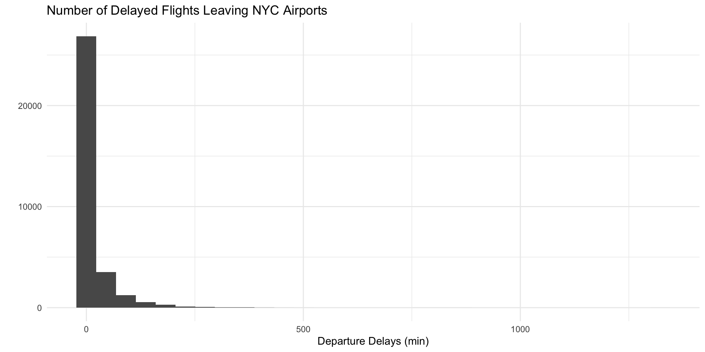
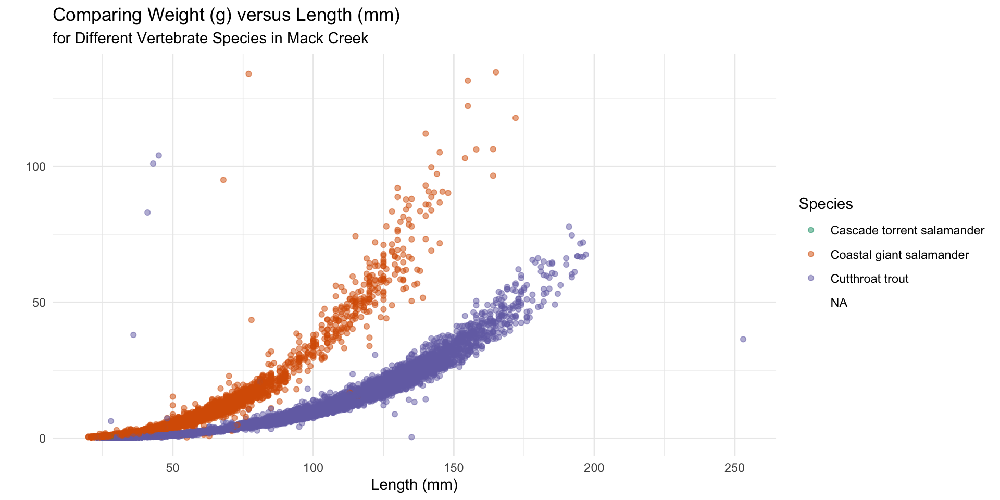
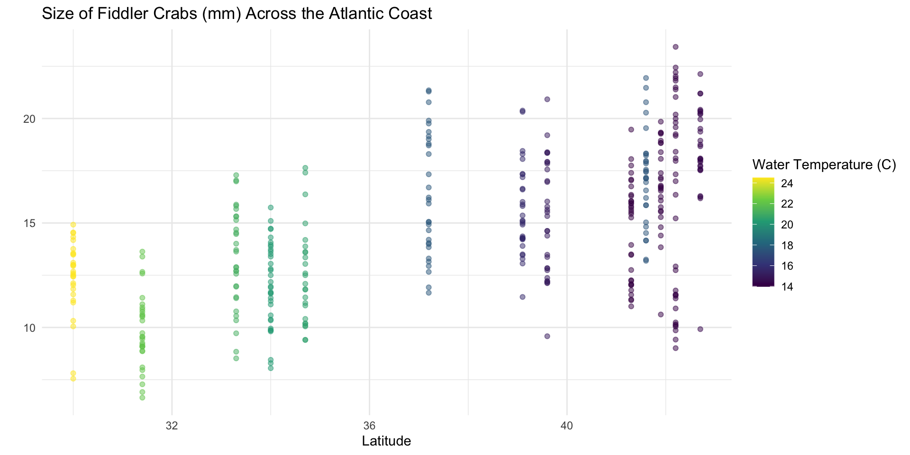

Midterm Project Feedback, Visualization Best (Better) Practices & Machine Learning
Deadline Reminders
- Lab 4 revisions are due tonight
- Statistical Critique 1 revisions are due next Thursday
- The final version of your Midterm Project is due Sunday at midnight
Deadline Extensions
You cannot request deadline extensions for the final version of your Midterm Project. The assignment portal closes at 12:00am on Monday. Do not ride the line.
. . .
Responding to Questions / Issues
I will not be responding to emails / Discord messages this weekend, so please plan accordingly.
Midterm Project Review
Help your peers!
Are the arguments / sentences easy to understand? Does the report flow?
Is the same information included in multiple places?
Do the plots have nice axis labels?
Can you easily find the regression equations? Do the equations make sense?
Do the interpretations / conclusions from the equations make sense?
Do they justify who they can infer their results onto?
Do they justify why they can / cannot use causal language?
Peer Feedback
Formatting Guidelines
- Don’t write in bullet points
- Avoid redundancy as much as possible
- Make contents easy to navigate
- Use subheaders and / or boldface to indicate important content
- Place your regression equations on their own line
Better Practices for Data Visualization
Some Guidelines
- Titles should be top left aligned (usually)
- Don’t make people tilt their head
- Alignment should create clean lines and symmetry
- Remove and lighten grids as much as possible
- Legends suck
- Whitespace is like garlic; take the amount you need and then triple it
- Fonts matter
- Color is hard
Some Guidelines
- Titles should be top left aligned (usually)
- Don’t make people tilt their head
- Alignment should create clean lines and symmetry
- Remove and lighten grids as much as possible
- Legends suck
- Whitespace is like garlic; take the amount you need and then triple it
- Fonts matter
- Color is hard
Don’t make people tilt their head

Tailoring Colors
Different color palettes are available through a variety of R packages. Popular options include:
. . .
This website provides an exhaustive list of color themes available through various packages.
Grids: remove and lighten as much as possible

A Reasonable Option – theme_minimal()
An Example for Categorical
and_vertebrates %>%
ggplot(mapping = aes(x = length_1_mm,
y = weight_g,
color = species)) +
geom_point(alpha = 0.5) +
labs(x = "Length (mm)",
y = "",
color = "Species",
title = "Comparing Weight (g) versus Length (mm) \nfor Vertebrates in Mack Creek") +
theme_minimal() +
scale_color_brewer(palette = "Dark2")
An Example for Continuous
pie_crab %>%
ggplot(mapping = aes(x = latitude,
y = size,
color = water_temp)) +
geom_point(alpha = 0.5) +
labs(x = "Latitude",
y = "",
color = "Water Temperature (C)",
title = "Size of Fiddler Crabs (mm) Across the Atlantic Coast") +
theme_minimal() +
scale_color_viridis_c(option = "viridis")
Machine Learning
Machine Learning
“the use and development of computer systems that are able to learn and adapt without following explicit instructions, by using algorithms and statistical models to analyze and draw inferences from patterns in data”
Data is Power
“Data is the new oil.”
The Economist, Intel CEO, Reliance Industrices CEO, UAE Minister of Artifical Intelligence, Google execs, etc., mainly elite white men
. . .
“Data is the same old oppression.”
BIWOC, white women, Indigenous people, immigrant communities, LGBTQ+ individuals, + more

Does your phone recognize your face?

How does Google label your images?

Should the cash bail system change?

Will your car be able to drive you?
Lab 6
Forward Selection (by Hand)
Start with the most basic model (one mean)
Decide which one variable to add (based on adjusted \(R^2\))
Decide if you should add another variable
\(\vdots\)
- Stop adding variables when adjusted \(R^2\) stops increasing
A More Automated Option
evals_train %>%
map(.f = ~lm(score ~ .x + <VARIABLES SELECTED>, data = evals_train)) %>%
map_df(.f = ~get_regression_summaries(.x)$adj_r_squared) %>%
select(-ID,
-score,
-<VARIABLE 1 SELECTED>,
-<VARIABLE 2 SELECTED>
) %>%
pivot_longer(cols = everything(),
names_to = "variable",
values_to = "adj_r_sq") %>%
slice_max(adj_r_sq)